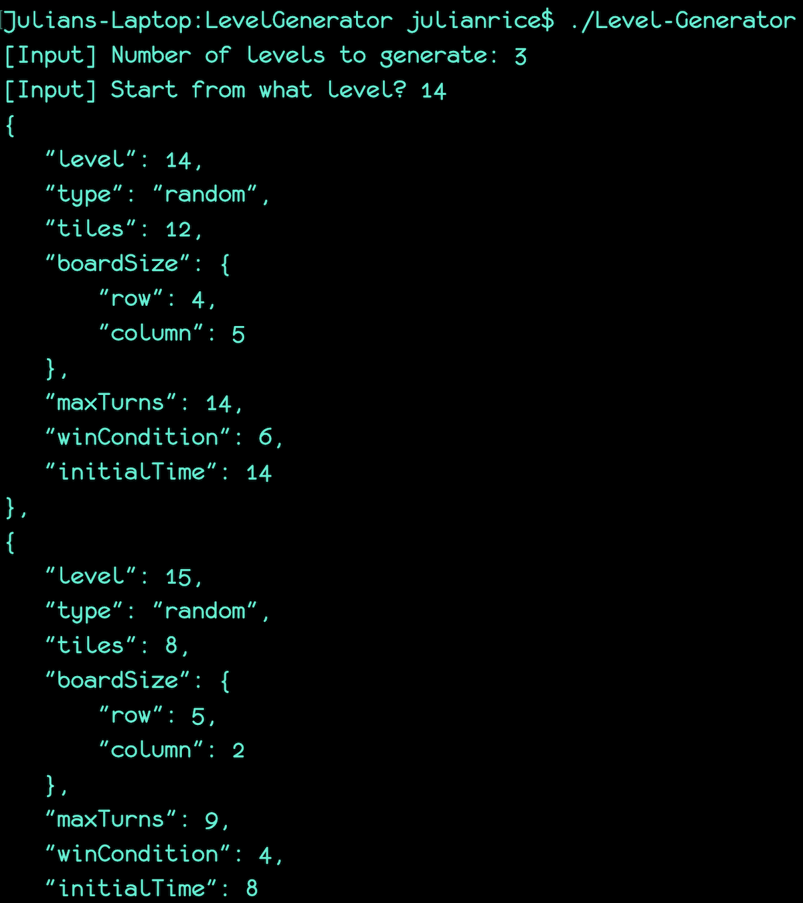

September 2018 - Present
Time Commitment: 10-15 Hours / Week
I commute to Quantasy's office in downtown LA once a week for six hours of work, and work remotely from my apartment on Sunday mornings for six hours designing levels, debugging the game, and working on ways to make design more efficient.
Summary
 For this Fall 2018 internship, I am primarily working on the creation of new levels for the iOS app hit, Harvey's Hundreds (App Store). I have already created over 100 custom levels and plan on pumping out more as the internship continues. The process includes modifying both the progression screen and level data files (JSON), then pushing the updates to a Github repository that then gets manually pushed to an Amazon S3 server.
For this Fall 2018 internship, I am primarily working on the creation of new levels for the iOS app hit, Harvey's Hundreds (App Store). I have already created over 100 custom levels and plan on pumping out more as the internship continues. The process includes modifying both the progression screen and level data files (JSON), then pushing the updates to a Github repository that then gets manually pushed to an Amazon S3 server.
The newly created levels are then available to play on the QA app that is installed on my phone (without a need to rebuild the app). I then go through every level and make sure that they are optimized and fun to play for basically any kind of player.
Custom Level Generator (C++)
I developed a level generator that takes the following input: the number of levels to generate, and the starting point (level). The generator's output is a text file that contains all of the levels generated and formatted properly, as well as the actual output (cout) just for viewing purposes. I felt that developing a level generator would be an excellent way to polish my programming skills (C++) with an "assignment" that would benefit me and make level design and creation a much more streamlined process. You can find the files at my Github repository with by clicking the button below.

Progression Screen, Level Optimizations
Modifying the progression screen is an essential part of getting the levels to be properly updated. One syntax error can render the entire build untestable; I found this out the hard way a couple times, and has helped me learn to an even greater degree how important syntax is in programming. The paths are set when updating the progression screen, but the positions of the images are variable and are always different to keep the level layout fresh for the player.
Thinking through each and every level carefully and playing through each and every level are completely different things. I found this out as I began to debug the levels and work on QA (quality assurance). Some levels that I thought would be very easy proved to be impossible without using powerups, and levels I expected to be difficult proved to be simple. I organized every new level that was being designed into a colorful spreadsheet that would then get remarks and constructive criticism from every playtester on the project. By separating every set of levels (sets contain 16 levels) by color, the spreadsheet was super easy to read!


{kind=link}